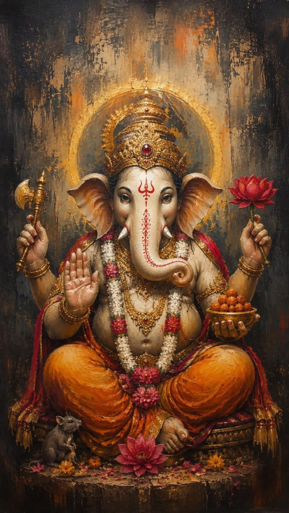
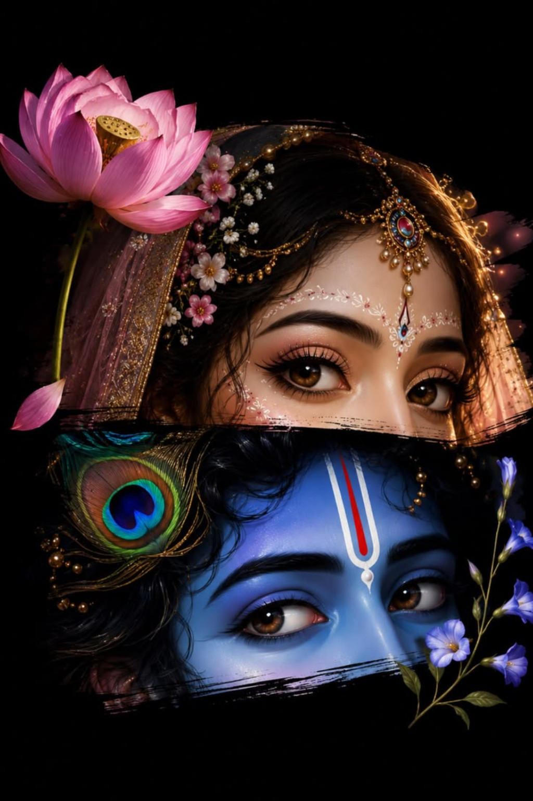
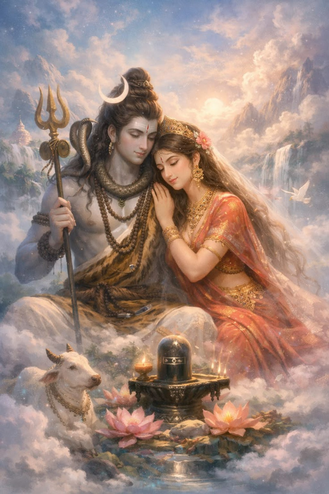
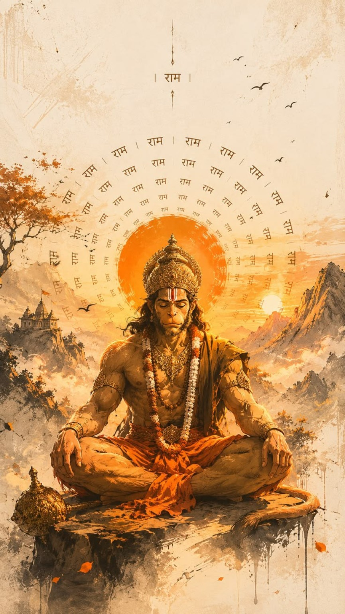

Ganesh Ji
विघ्नहर्ता · शुभारंभ
Explore →Four forms of divinity.
Four paths of devotion.
One eternal light.

विघ्नहर्ता · शुभारंभ
Explore →
प्रेम · भक्ति · अनंत
Explore →
शिव · शक्ति · सनातन
Explore →
भक्ति · शक्ति · साहस
Explore →हिंदू परंपरा में गणेश जी को आरंभ, बुद्धि और मंगल के देवता के रूप में श्रद्धा से स्मरण किया जाता है। किसी शुभ कार्य से पहले उनका स्मरण करने की परंपरा बहुत व्यापक है।
पुराणिक कथाओं में माता पार्वती द्वारा गणेश जी के प्राकट्य और उनके शिव जी से पुनर्मिलन की कथा विशेष रूप से प्रसिद्ध है। यह कथा माता-पिता के प्रति प्रेम, कर्तव्य और समर्पण का भाव प्रस्तुत करती है।
“जहाँ प्रेम में भक्ति हो,
वहीं राधा-कृष्ण का वास है।”
श्रीकृष्ण की बाल और किशोर लीलाओं का संबंध ब्रजभूमि से जोड़ा जाता है। राधा-कृष्ण की भक्ति परंपरा में उनका संबंध दिव्य प्रेम, समर्पण और आत्मिक भक्ति का प्रतीक माना जाता है।
भक्ति साहित्य में राधा को कृष्ण के प्रति पूर्ण प्रेम और समर्पण की आदर्श भक्त के रूप में देखा जाता है। वृंदावन की परंपराओं में राधा-कृष्ण की लीलाओं का स्मरण प्रेम को आध्यात्मिक साधना से जोड़ता है।
“शिव बिना शक्ति अधूरे हैं,
और शक्ति बिना शिव।”
माता पार्वती को हिमवान की पुत्री और शिव जी की सहधर्मिणी के रूप में पुराणिक परंपरा में वर्णित किया जाता है। पार्वती जी की तपस्या और शिव जी से विवाह की कथा अनेक ग्रंथों और लोकपरंपराओं में मिलती है।
शिव और शक्ति की उपासना में दोनों को चेतना और शक्ति के परस्पर पूरक रूपों के रूप में समझा जाता है। इसी कारण उनका युगल स्वरूप संतुलन, परिवार और आध्यात्मिक एकता का सुंदर प्रतीक माना जाता है।
रामायण परंपरा में हनुमान जी को श्रीराम के महान भक्त, दूत और सहयोगी के रूप में स्मरण किया जाता है। उनकी भक्ति, साहस, विनम्रता और सेवा-भाव भारतीय भक्ति परंपरा में विशेष स्थान रखते हैं।
लंका की यात्रा, सीता जी का संदेश श्रीराम तक पहुँचाना और राम-रावण युद्ध में सहयोग करना हनुमान जी से जुड़ी प्रमुख रामायण कथाओं में शामिल हैं।